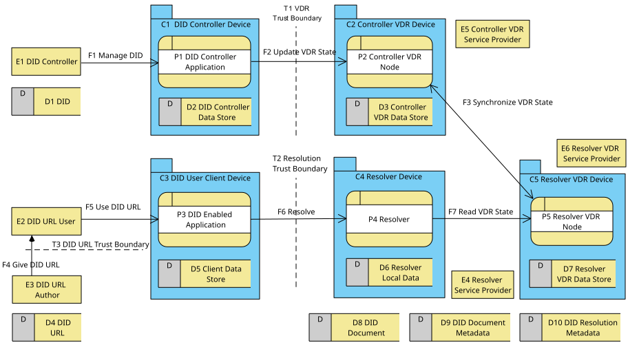

This threat model describes known threats and possible responses for Decentralized Identifiers defined in Decentralized Identifiers (DIDs) v1.1 specification at https://www.w3.org/TR/did-1.1/ and Decentralized Identifier Resolution (DID Resolution) v1 defined at https://www.w3.org/TR/did-resolution-1.0/. See these specifications for details.
This is a draft of a new NOTE-track publication from the Decentralized Identifier Working Group (DIDWG).
Decentralized identifiers (DIDs) enable verifiable, decentralized digital identity.
In contrast to typical federated identifiers, DIDs have been designed so that they may be decoupled from centralized registries, identity providers, and certificate authorities. DIDs are URLs that associate a DID subject with a DID document allowing trustable interactions associated with that subject.
did:key:z6MkhaXgBZDvotDkL5257faiztiGiC2QtKLGpbnnEGta2doK
DID Resolution is the process of retrieving the canonical DID document from the associated Verifiable Data Registry as defined by the DID's method. Each DID document can express cryptographic material as verification methods—enabling a party to prove use of secret cryptographic material for particular verification actions like authentication, authorization, and encryption—and services, which enable trusted interactions associated with the DID subject.
One can add parameters to a DID, creating a DID URL for identifying specific resources other than the DID document. DID URLs are a DID with optional additional path, query, or fragment part. Dereferencing a DID URL, uses the result from resolving the DID in the DID URL to invoke a handler that applies the DID URL in the current context, such as evaluating a proof or sending a DIDComm message. Dereferencing a DID URL that has no additional parameters returns the DID document.
did:key:z6MkhaXgBZDvotDkL5257faiztiGiC2QtKLGpbnnEGta2doK#key-1
did:example:123456789abcdefghi/images/avatar.png
A discussion of use cases can be found in the W3C's Use Cases and Requirements for Decentralized Identifiers.
DIDs and DID Resolution are realized by four key software components, each typically running on separate devices under the control over different parties, although different configurations may deploy these components differently.
The four primary software components used with DIDs are a DID controller application, a DID-enabled application, a resolver, and a Verifiable Data Registry (VDR) node. Since DIDs were built to enable decentralized data registries, it is understood that the VDR node accessed by a controller may be different than the node accessed by the resolver.

The DID controller (E1) manages the DID (D1), by creating, updating, and deactivating the DID as desired (F1), using a DID Controller application (P1) running on a DID Controller Device (C1) with access to its local DID Controller Data Store (D2). The user manages the DID, the DID Controller application (P1) updates the VDR State by communicating (F2) with its preferred VDR Node (P2) which has access to its local data store (D3) which is kept in sync (F3) with other VDR nodes. Each VDR node (P3, P5) is understood to be running on its own device (C2, C5) under control of potentially different service providers (E5, E6).
How the DID is managed (F1), how the VDR state is updated (F2) and how the VDR maintains synchronization (F3) is DID-method specific and outside the scope of the specifications under analysis. Please see the method specification and any associated threat models for further details.
Resolution begins with a DID URL (D4) created by some DID URL Author (E3) and given to them through some means (F4) and given to a DID-enabled application (P3) by a DID URL User (E2) to achieve some user-directed purpose. The author may be the issuer of a verifiable credential who used a DID to sign a credential provided by a VC holder to a VC verifier (see the Verifiable Credentials specification), the author of an email containing a DID URL, or a presenter at a conference, presenting a DID on-screen. How the DID is given (F4) and used (F5) are both out of scope for these specifications, but in scope for this threat model.
Once the DID-enabled application (P3) has a DID URL with direction from the user to use that DID URL for a specific purpose, it executes the appropriate business logic to manage DID resolution and apply the result to use the DID as directed by the user. For example, if the application has been directed to verify the proof on a verifiable credential, it would use the result from resolution to do that task.
For resolution, the DID-enabled application (P3) connects to a DID Resolver (P4) to resolve the DID in the DID URL, then uses that result as directed by the user. The resolver (P4) queries the VDR state (F7) from its chosen VDR node (P5). The result of resolution is a DID document (D8), DID document metadata (D9), and any DID resolution metadata (D10).
It is also worth noting that there are three major trust boundaries that must be crossed. First, one must trust (T1) the VDR and the software and services used to access the VDR for managing the state of the VDR. Updating (F2), reading (F7), and synchronizing the VDR state (F3) requires trusting the process called, as well as the service provider hosting the VDR node and the VDR itself. For example, for a Bitcoin-based DID method, you must trust the software updating the VDR, the service providers they connect to for reading and writing to the blockchain, and the innate guarantees of Bitcoin as a distributed system. In other words, the VDR must be trustworthy.
Second, one must trust (T2) the resolver (P4) called when resolving a particular DID, including all of its back-end processing, such as how it reads from the VDR. If your deployment runs its own VDR node for resolution (P5), the trust is with your own ability to operate those services correctly including understanding the resolver code and its configuration. If you rely on another party for resolution, you must trust that they are doing the job correctly, including whatever back-end services they might be using.
Third, the DID URL User (E2) must trust (T3) the DID URL (D4) provided by the DID URL Author (E3), as well as the transport mechanism that got the DID URL to the DID URL User, as there is no mechanism for verifying, on its own, whether or not the DID URL is legitimate. Other means should be used to verify that the DID URL is from a trustable source and communicated in a trustable manner. For example, DIDs in a Verifiable Credential, can be trusted if the issuer and securing mechanisms are trusted. DID URLs received by email or relayed by a stranger may be dangerous.
It is worth noting that conformant DID-enabled applications MUST allow the DID URL user (E2) to specify which resolver (P4) to use for any particular DID method [link to spec]. This trust decision is under the control of the DID URL User because the result from the resolver (D8, D9, and D10) is necessarily taken as authoritative for those artifacts, including the cryptographic material that secures DID interactions. Regardless of the complexity of the resolver and VDR systems, the DID user chooses the resolvers they trust, making this an unavoidable build vs. buy decision.
| E1 DID Controller | The entity that manages the DID (D1) by creating, updating, and deactivating it as desired. (DID controller) |
| E2 DID URL User | The end user who uses a DID URL (D4) through a DID-enabled Application (P3) to accomplish a specific purpose. (DID URL User) |
| E3 DID URL Author | The entity (e.g., a Verifiable Credential issuer or document creator) who constructs a DID URL (D4) and provides it to the DID URL User (E2). (DID URL) |
| E4 Resolver Service Provider | The party or organization operating or legally responsible for the Resolver (P4) on the Resolver Device (C4), including its configuration and any back-end services it relies on. (DID resolver) |
| E5 Controller VDR Service Provider | The party or organization operating or legally responsible for the Controller VDR Node (P2). (verifiable data registry) |
| E6 Resolver VDR Service Provider | The party or organization operating or legally responsible for the Resolver VDR Node (P5). (verifiable data registry) |
| C1 DID Controller Device | The device under control of the DID Controller (E1) that runs the DID Controller Process (P1) and holds its local data store, DID Controller Data Store (D2). (DID controller) |
| C2 Controller VDR Device | The device hosting the Controller VDR Node (P2) and its local VDR data store, Controller VDR Data Store (D3). (verifiable data registry) |
| C3 DID User Client Device | The client device operated by the DID URL User (E2) that runs the DID-enabled Application (P3) and client data store, Client Data Store (D5). (client) |
| C4 Resolver Device | The device hosting and executing the Resolver (P4) process and its local data, Resolver Local Data (D6). (DID resolver) |
| C5 Resolver VDR Device | The device hosting the Resolver VDR Node (P5) and its associated VDR data store, Resolver VDR Data Store (D7). (verifiable data registry) |
| P1 DID Controller Process | The application running on the DID Controller Device (C1) used by the DID Controller (E1) to manage the DID and submit state updates. (DID controller) |
| P2 Controller VDR Node | The Verifiable Data Registry node process that accepts updates from the DID Controller Process (P1) and keeps data synchronized. (verifiable data registry) |
| P3 DID-enabled Application | The client application running on the DID User Client Device (C3) that executes business logic, initiates resolution via Resolve (F6), and applies the result. (DID-enabled application) |
| P4 Resolver | The software process on the Resolver Device (C4) that executes DID resolution by querying VDR state via Read VDR State (F7). (DID resolver) |
| P5 Resolver VDR Node | The VDR node process queried by the Resolver (P4) to read state data required for resolution. (verifiable data registry) |
| D1 DID | The Decentralized Identifier managed by the DID Controller (E1). (decentralized identifier (DID)) |
| D2 DID Controller Data Store | The local data store on the DID Controller Device (C1) accessible to the DID Controller Process (P1). (DID controller) |
| D3 Controller VDR Data Store | The data store maintained by the Controller VDR Node (P2). (verifiable data registry) |
| D4 DID URL | The DID URL (containing a DID with optional path, query, or fragment) created by the DID URL Author (E3) and passed to the DID URL User (E2). (DID URL) |
| D5 Client Data Store | The local data store on the DID User Client Device (C3) accessible to the DID-enabled Application (P3). (client) |
| D6 Resolver Local Data | Data stored on the Resolver Device (C4) used by the Resolver (P4) process. (DID resolver) |
| D7 Resolver VDR Data Store | The data store maintained by the Resolver VDR Node (P5). (verifiable data registry) |
| D8 DID Document | The canonical DID document returned as the primary result of DID resolution. (DID document) |
| D9 DID Document Metadata | Metadata describing the resolved DID Document (D8) (e.g., timestamps, version ID). (DID Document Metadata) |
| D10 DID Resolution Metadata | Metadata describing the resolution process itself (e.g., content type, error codes). (DID Resolution Metadata) |
| F1 Manage DID | The interaction where the DID Controller (E1) creates, updates, or deactivates a DID using the DID Controller Process (P1). (Method Operations) |
| F2 Update VDR State | The communication flow from the DID Controller Process (P1) to the Controller VDR Node (P2) to write state changes. (verifiable data registry) |
| F3 Synchronize VDR State | The network synchronization flow between VDR nodes (Controller VDR Node (P2) and Resolver VDR Node (P5)) to maintain state consistency across providers. (verifiable data registry) |
| F4 Give DID URL | The channel or mechanism by which the DID URL Author (E3) transmits the DID URL (D4) to the DID URL User (E2). (DID URL) |
| F5 Use DID URL | The interaction where the DID URL User (E2) directs the DID-enabled Application (P3) to process a DID URL (D4). (DID URL dereferencing) |
| F6 Resolve | The resolution request call made from the DID-enabled Application (P3) to the Resolver (P4). (DID resolution) |
| F7 Read VDR State | The query flow from the Resolver (P4) to the Resolver VDR Node (P5) to fetch VDR state required for resolution. (verifiable data registry) |
| T1 VDR Trust Boundary | The boundary between the DID Controller Process (P1) on DID Controller Device (C1) and the Controller VDR Node (P2) on Controller VDR Device (C2), crossed by Update VDR State (F2). Requires trusting the VDR node process, its service provider (Controller VDR Service Provider (E5)), and the underlying VDR infrastructure. (verifiable data registry) |
| T2 Resolution Trust Boundary | The boundary between the DID-enabled Application (P3) on DID User Client Device (C3) and the Resolver (P4) on Resolver Device (C4), crossed by Resolve (F6). Requires trusting the resolver software, its configuration, and the Resolver Service Provider (E4). (DID resolver) |
| T3 DID URL Trust Boundary | The boundary between the DID URL Author (E3) and the DID URL User (E2), crossed by Give DID URL (F4). Requires the user to trust that the DID URL (D4) comes from an authentic source and was transmitted securely. (DID URL) |
The primary end user for DID resolution is an individual human seeking to use a DID URL for some purpose. There are two major categories of [=DID URL User=]:
The [=DID URL User=] is primarily concerned with the integrity and reliability of the system. They may be just about anyone on the planet with a computation device at their disposal: a smart phone, a desktop, even a shared device at a library or internet cafe. The User could also be a corporate employee or agent, who has received a DID from a supplier or customer and wants to use it to verify a verifiable presentation or satisfy a confidence method to increase their confidence that a given actor is the subject of a particular Verifiable Credential.
As a technical layperson, the DID URL User requires a certain reliability and simplicity; the system should “just work” in the manner they have become accustomed to on the Web. When their software encounters a DID URL, it should work just like any URL, without additional interactions, when possible.
Perhaps most importantly, the DID URL User SHOULD retain complete control over which software and services they use for DID resolution.
In practice, most individuals will make choices based on brand confidence and peer recommendations. End users choose the software they want to run and the services they access, including which resolvers to use for specific DID methods. Just like a web browser enables end users to choose which website they want to visit, DID URL users MUST be able to direct their DID client software to use the resolvers they trust. In practice, software will be delivered with default services and many users will never see the difference, just as some users may start on a browser's default home page and only click on links, never typing a URL into an address bar. However, it is a fundamental security decision that end users get to decide which resolvers are trusted.
Finally, the DID URL User may have any number of accessibility challenges, from visual impairments to language gaps. While it is important that DID resolution works seamlessly without a lot of cognitive burden, implementations should take care to ensure that the broadest number of users can effectively use the technology, especially when interactive prompts are used to confirm or direct intermediary behavior. For example, did:btcr has an iterative resolution process, where the data required to complete resolution may not be known–even as a requirement–when the DID URL is initially presented.
The client code maintainer cares about the integrity of their software code base.
The client administrator cares about a reliably working client device. They want to know the software configuration on the device aligns with individual and/or corporate policy, especially with regard to resolver selection and library adoption.
If the client service provider is primarily concerned with the integrity, usability, and profitability/cost of the service. For typical consumer usage, the end user is the client service provider, but when the client is run on behalf of a corporation for its employees, that employer is the client service provider.
The Client Service Provider cares about the code and configuration on the device is as the administrator has established, based on the service provider’s policies.
The resolver code maintainer wants to ensure that their code is provably executing the resolution function as defined in the DID methods it supports.
The resolver administrator wants to ensure that the resolution service is configured as intended and that any libraries or original software is reliably performing as needed and expected.
The resolver administrator wants to ensure that the resolution service is running as configured and without errors.
Fundamentally, the resolver service must be trustworthy enough for users to be willing to rely on its service for cryptographically anchored interactions. Since DIDs can be used to secure information and transactions of arbitrary value, the service provider necessarily wants to be perceived as reliable, friendly, and easy to use.
At the end of the day, it's the resolver service provider that the DID URL User is trusting to return the real, authoritative DID document.
The VDR Code Maintainer cares primarily about the quality of their code. Many VDRs are open source, but there is no expectation that this is always true. Whether open or closed source, the code maintainer wants to be able to maintain code quality so that those who rely on their software can rest assured that the software is doing exactly what is promised, and no more.
That said, the VDR Code Maintainer may only care about the Verifiable Data Registry, without any expectation of use beyond that. To wit, BTCR2 can use a VDR device that is directly running a full bitcoin node; in that configuration, the VDR code maintainer is a bitcoin core developer. Bitcoin core developers care primarily about the integrity of the bitcoin network as maintained by bitcoin core. They don't care about DIDs, nor do they need to.
The VDR administrator runs the actual VDR device queried by the resolver. In most configurations, they care primarily (perhaps ONLY) about the reliable operation of the VDR device.
VDR service providers care about providing a reliable verifiable data registry, for whatever purpose that VDR is used for. Often a VDR service provider stands up a VDR device as a public service, such as bitcoin nodes that are accessible by others. Some service providers may offer VDR capability as a paid service.
This threat model was developed using the W3C Threat Modeling Guide. Contributions to this threat model that are aligned with that approach are welcome.
To propose a change, create an new issue proposing your change. Discussion on Github about that issue will help collaborators understand and incorporate it into the model. It may be that the issue is perfect, but most likely feedback will improve it.
Once a consensus has emerged about adding a particular threat, updating the diagram, or any other change, a Pull Request can be submitted to the repo to propose the actual specification text that realizes the suggestion.
Issues discussing threats should eventually cover all of the threat details needed to propose the change in a PR.
To add a new threat to the model, we need several components.
We discuss each of these below.
Choose a short, descriptive name that captures the essence of the threat. Make sure the name is distinctive within this threat model.
Every threat should have a unique ID that starts with the letter 'T' following by an integer number, e.g., T12
Describe the threat with enough detail for readers to understand the scope of concern
Each response should describe something either the specification does or that implenters should consider to address the threat. Responses also need a good name (short and descriptive) and a unique ID (starting with the letter 'R' followed by an integer number).
It is likely that a single response is appropriate for multiple unique threats. For example, cryptographic signing is a reasonable response to tampering for any number of data objects. In this case, simply reuse the response name and ID of the first use and repeat the description text along with the phrase, in parantheses, '(Reused Response)'
Drawing from the diagram and dictionary, identify the components in the diagram affected by this threat. Make sure the PR includes a link to the affected components, e.g.,
C1
Identify the threat taxonomy used to identify the threat. For example, STRIDE, LINDUN, or OSSTMM3 for taxonomy. If none was used, enter "NONE".
Identify the class of threat as defined within the threat taxonomy. For example, "Spoofing".
Create a JavaScript file that defines and registers your threat, formatted like the following template. Make sure you retain the opening immediate function execution wrapper and that you register with the ThreatModel object.
// wrap your data definition in an Immediately Invoked Function Expression
(function () {
// then define a single threat
var threat = {
id: "T0",
name: "Template Threat",
description: "This is a template threat. It is not a real threat.",
responses: [{
id: "R0",
name: "Template Response",
description: "This is a template response. It is not a real response."
}],
elements: ["C1", "P1"],
taxonomyName: "Fake Taxonomy",
taxonomyClass: "Fake Type"
tags: ["security"]
}
};
// then register that threat with the global ThreatModel object
window.ThreatModel.registerThreat(threat);
})(); // Finish the Immediately Invoked Function Expression
Name the file uniquely, preferably with the following pattern based on the ID and name, all in lower-case kebab style
var id = `${threat.id}-${threat.name}`;
id = id.toLowerCase();
id = id.replace(/ /g, "-");
return id;
For example, T0. Template Threat becomes
t0-template-threat
Add a new <script> tag
<script src="threats/t0-template-threat.js"></script>
Update the outline.js file, adding the id of
your threat, e.g., T0 to the threats array.
Open the index.html locally and you should see your threat added to the list. Propose your working change as a PR, for consideration by the editors.